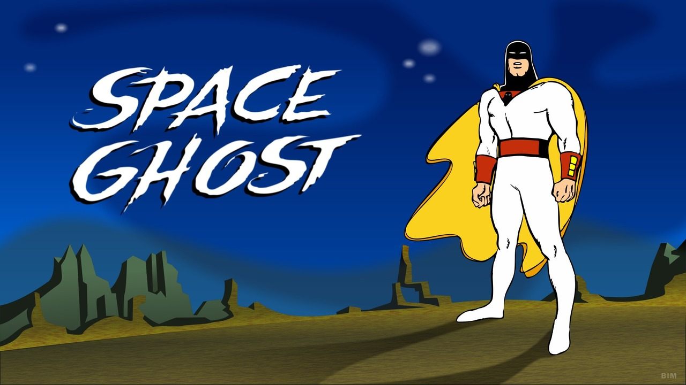
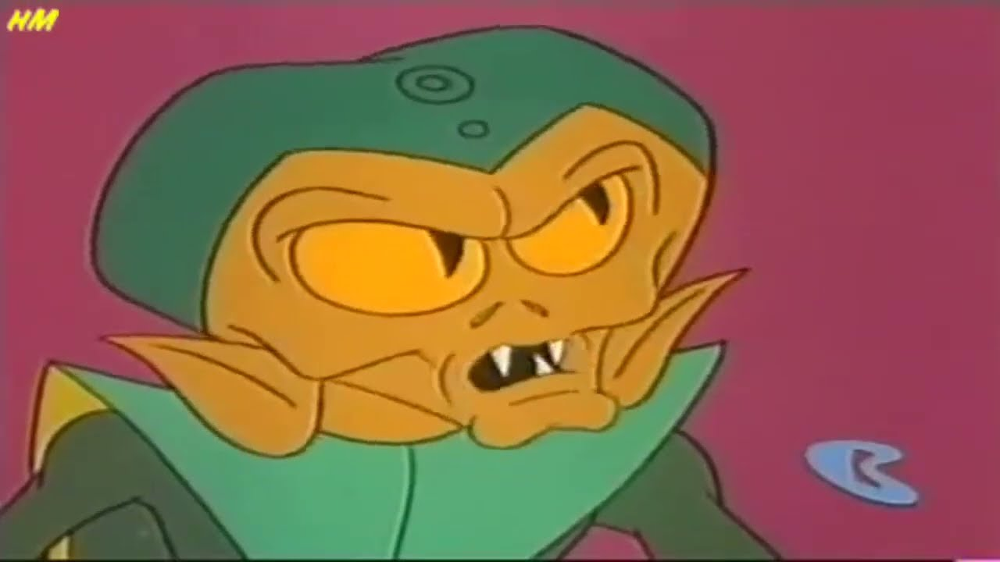
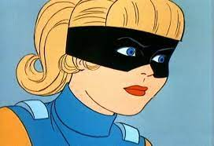
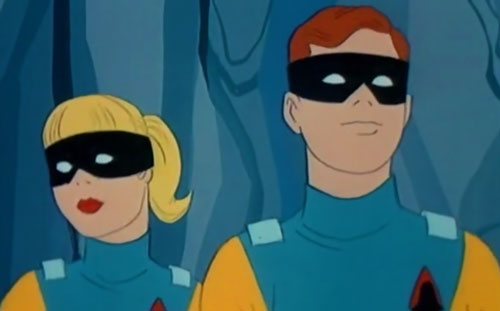
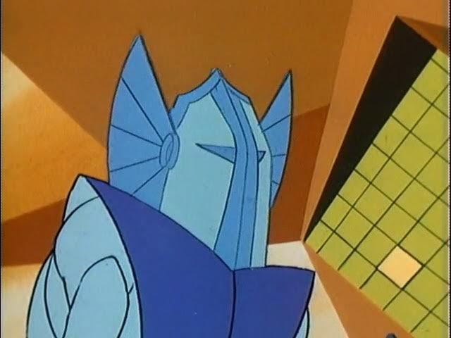

Personagens
-

Space Ghost
Protagonista
Space Ghost é o personagem titular e protagonista da franquia Space Ghost, aparecendo em todas as iterações.
Saiba Mais -

Creature King
Vilão
O Rei das Criaturas era um dos vilões do Space Ghost. Ele usou um capacete de controle mental para controlar as mentes dos animais espaciais.
Saiba Mais -

Jan
Herói
Jan Hunter foi um dos ajudantes do Space Ghost durante suas primeiras aventuras, junto com seu irmão gêmeo Jace e seu macaco Blip.
Saiba Mais -

Jace
Herói
Jace Hunter foi um dos ajudantes do Space Ghost durante seu tempo como super-herói, junto com sua irmã gêmea Jan e seu macaco de estimação Blip.
Saiba Mais -

Zorak
Vilão
Zorak é um Dokarian, também conhecido como um gigante espaço mantis. Zorak era o líder de um exército de guerreiros espaciais chamado Zorathian.
Saiba Mais -

Metallus
Vilão
Metallus é um vilão e membro do Council of Doom que apareceu nas séries animadas Space Ghost e Space Ghost Coast to Coast.
Saiba Mais